Latent dimensions
Dimensionality reduction
Problem 8: Data reduction
Instance:
a collection (dataset) \(\mathbf{D}\) of datapoints from \(\mathbf{X}\), e.g., \(\mathbb{R}^m\)
[a distinct independent variable \(x_i\)]
Solution: a projection of \(\mathbf{D}\) onto \(\mathbb{R}^n\), \(n < m\)
Measure: error in the estimation of \(x_i\)
Example: genre identification in consumer behaviour analysis
Example
Olivetti faces are 64x64 binary matrices.
Through SVD we discovered that most singular values are in fact 0 or very small
by considering only the top 20 or so singular values we can obtain a very similar image with less data:
A contains 64x64=4096 values
\(U\Sigma V^T\) contains 20x20 + 20 + 20x20 = 820 values (5:1 compression ratio)
Why reduce dimensions?
- easier to store, quicker to process
- interpretation and visualisation
- remove redundant or noisy features
- escape the curse of dimensionality and go back to intuitive distance features
- discover hidden correlations/topics
When reduce dimensions?
When any of the goals becomes important
Empirically: when we believe that data essentially represents the mixing of a smaller set of feature which are the real axes of the data.
There really are only two features: sci-fi and romance

How to reduce dimensions?
High-level view:
data lies on or near a low-dimensional space:
axes of that space are effective representations of data
Examples: \(D\longrightarrow d\)
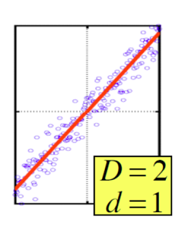The data axes (in red) are almost never the original measurement axes
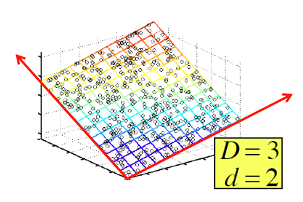Bankground: matrix rank
Rank is an important feature/descriptor of a data matrix
Rank is the maximum number or colums (or rows) that are linearly independent.
Such independent cols/rows are candidates for the new, reduced reference system (the red axes)
Rectangular matrices with SVD: \(r \leq \min\{n,m\}\)
We can map data points is a completely-new, dataset-dependent representation!
The dataset-depent representation will be compact
Let’s create a new, abstract feature space
Example
Handmade dimensionality reduction, from the MMDS textbook
\[ A_{3\times 3} = \begin{pmatrix} 1 & 2 & 1\\ -2 & -3 & 1\\ 3 & 5 & 0 \end{pmatrix} \]
\(r=2\) as the third row can be expressed as the first minus the second:
\[ \begin{array}{rrrl} 1 & 2 & 1 & -\\ -2 & -3 & 1 & =\\ \hline\\ 3 & 5 & 0 \end{array} \]
We create a new 2-d space where the axes are the first two rows:
\([1,0,0],[0,1,0],[0,0,1]\) \(\longrightarrow\) \([1, 2, 1],[-2, -3, 1]\)
The new rows are \([1, 0]\) \([0, 1]\) and \([1,1]\)
\[ A^\prime_{3\times 2} = \begin{pmatrix} 1 & 0\\ 0 & 1\\ 1 & -1 \end{pmatrix} \]
The new points work as selectors of the new axes: it’s easy to go back from this space to the original, no loss of information/precision
Dimensionality reduction
In real dataset mapping to a lower-dimensional space may introduce errors
in the \(2\rightarrow 1\) example below, instead of points we just take the measure (distance from the origin) of their projection on the red axis
The red axis is chosen as to minimise the error introduced by the \(2\rightarrow 1\) projection.
Data mining studies how to find such axes, called concepts
They capture some alignment which is inherent to the data.
SVD
Decomposition
\[ A_{(m \times n)} = U_{(m \times m)} D_{(m \times n)} V^T_{(n \times n)} \]
U is a orthogonal m. of left-singular (col.) vectors
D is a diagonal matrix of singular values
V is a orthogonal m. of right-singular (col.) vectors
Suppose only \(r\) (\(r<\min\{m,n\}\)) singular values are non-zero
We can rewrite the decomposition as follows:
\[ A_{(m \times n)} \approx U_{(m \times r)} D_{(r \times r)} V^T_{(r \times n)} \]
Suppose \(r=2\), visualise \(A_{(m \times n)} \approx U_{(m \times 2)} D_{(2 \times 2)} V^T_{(2 \times n)}\)
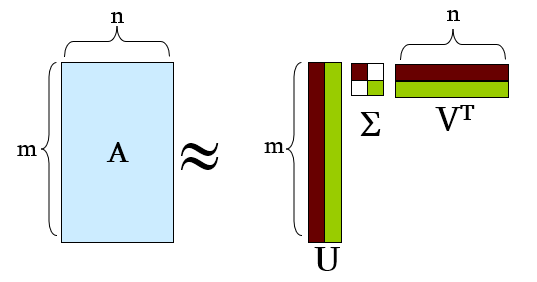\[ A_{(m \times n)} \approx \sum_i \sigma_i U_i \circ V^T_i \]
where \(U_i\) is the i-th column of \(U\) and \(\circ\) is matrix multiplication
Now A is represented as the sum of independent factors that were not explicit in the original data
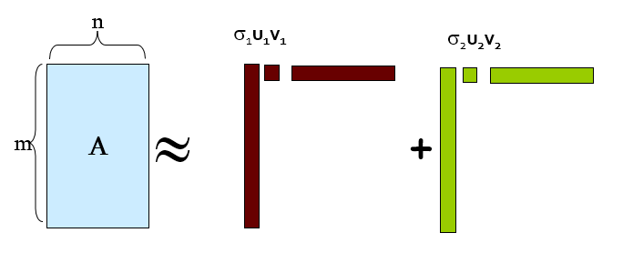Example: users to films becomes users to concepts to films
(sligthy different data)

Concepts
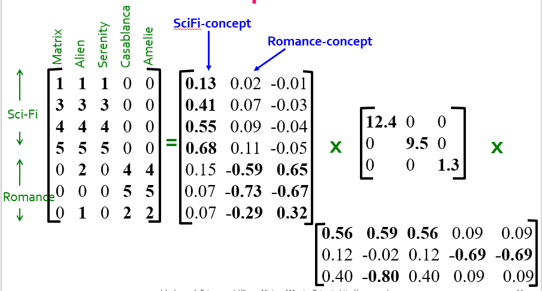\(U\) is a user-to-concept similarity matrix
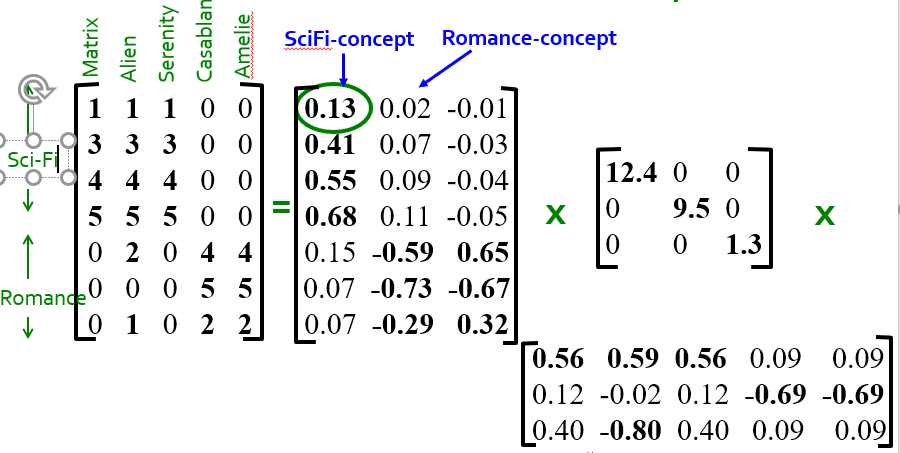\(\sigma\)s reveal the strength of each concept
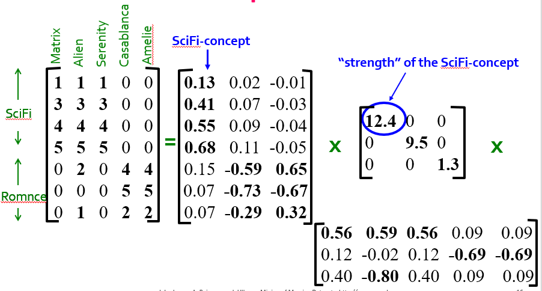\(V^T\) is a concept-to-film similarity matrix
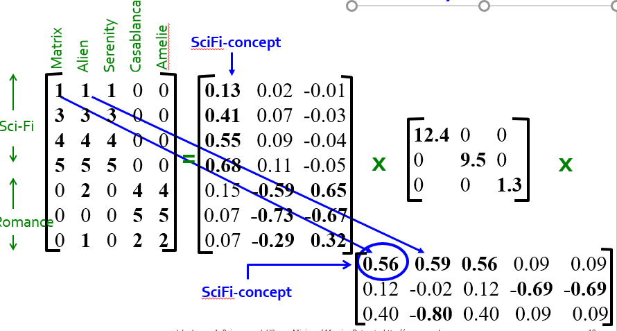SVD interpretation -1
First interpretation
The singular vectors that make up V (and U) are the new axes for projection
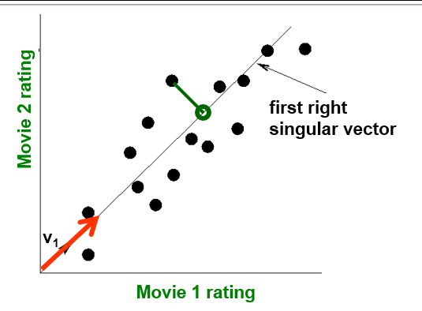The singular vectors that make up V (and U) are the new axes for projection
They will minimise the reconstruction error (\(z\) is the the value obtained by the reduced SVD)
\[\epsilon = \sum_{i=1}^{m} \sum_{i=1}^{n} \left\lVert a_{ij} - z_{ij}\right\lVert\]
The sum of the green, orthogonal lines connecting the point to its compressed representation on the new axis is minimal
SVD interpretation -2
Second interpretation
Again, we use the singular vectors as the new axes
The \(\sigma\)s indicate the spread (variance) of the projected points on the new axis
the more spread apart points are, the easier it will be to classify/find cluster them
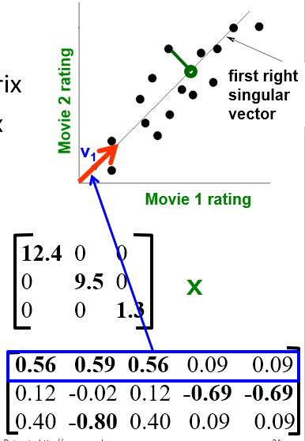Let’s see what happens to the original datapoints
\(UD\) project users onto the concept axes
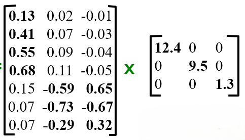We see values that look like measures of the implicit user-to-topic affiliation
Interpreting negative values is problematic, expecially for \(V^T\)
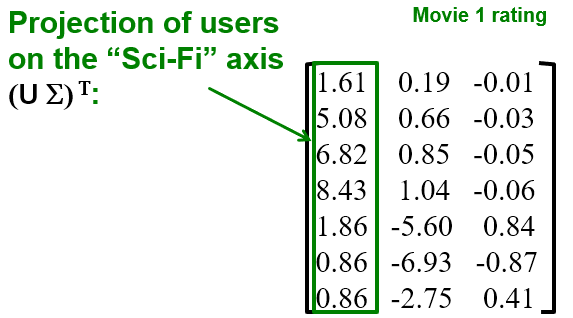
Dimensionality reduction
Set the smallest singular values to 0
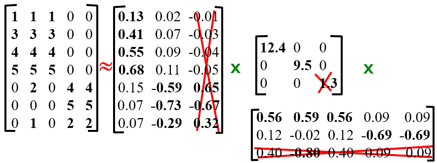The B matrix
Let \(A=UDV^T\) as before, with a ranking \(r \le \min\{m,n\}\)
For a small integer \(k\), define
and let \(E\) be a reduction of \(D\): same everywhere but for \(\sigma_{k+1}\dots \sigma_{r}\) set to 0.
Theorem: \(B=UEV^T\) with ranking \(k\) is the best approximation of A with rank \(k\):
\(B \in \mathrm{argmin}_{X:\mathrm{rank}(X)=k}\{ ||A-X||_F \}\)
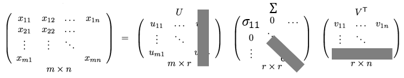Why B is a good reduction?
rows of \(U\) and \(V\) are the new axes, but they are unit vectors
the singular values \(\sigma_i\) do the scaling
\[ A_{(m \times n)} \approx \sigma_1 U_1 \circ V^T_1 + \sigma_1 U_1 \circ V^T_1 + \dots \sigma_r U_r \circ V^T_r \]
since we constructed \(D\) to have \(\sigma_1 \ge \sigma_2 \dots\), the smallest \(\sigma\) will do little scaling
so dropping \(\sigma_{k+1}\dots \sigma_{r}\) will introduce less error
Rule of thumb: keep singular values that sum up to about 80% of the total ‘energy’
\[ \sum_1^k \sigma_i \approx 0.8\sum_1^r \sigma_j \]
Conclusions
\(A=UDV^T\) provides a unique decomposition that is interpretable
Interpretability:
\(U\): user-to-concept affiliations/similarities
\(D\): strenght of each concept
\(V\): film-to-concept affiliations/similarities
SVD picks up linear dependencies
Dimensionality reduction:
SVD finds the best reduced matrix B
\(k\) is not really an hyperparameter (as with K-nn): we set it empirically to keep 80% of values
SVD dim. reduction is the key to denoising
Cost:
the core component requires \(\min\{nm^2, n^2m\}\) ops.
Implementation:
truncatedSVD in Scikit-learn